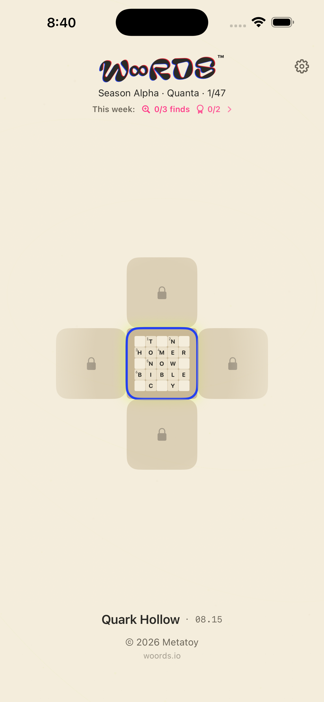
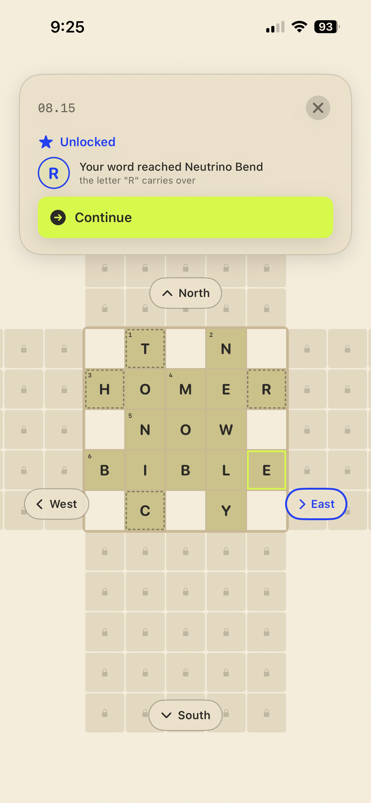
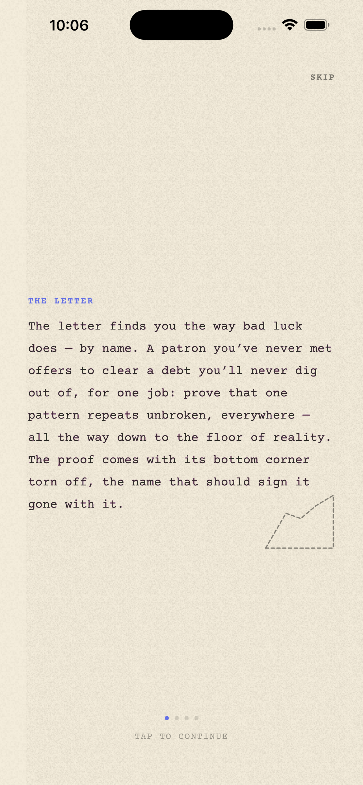
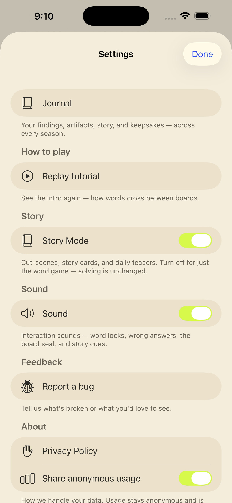

(h) woords — an infinite crossword (iOS) GEN MEDIA
"A crossword with no edge."
Teaser
App Store screenshots





Overview
"A crossword with no edge." SwiftUI, 564 automated tests, TestFlight beta; season storytelling with generated art direction. Core mechanic is patent-pending (happy to discuss under the hood in person).
What I built
I designed, built, tested, and shipped woords solo: an infinite crossword for iOS in SwiftUI. The board grows across seasons with generated art direction, and the core mechanic is patent-pending.
How it works
The app is native SwiftUI backed by a content pipeline that generates puzzles and season art. An AI-assisted pipeline handles content generation and QA, and the build is covered by roughly 564 automated tests.
Results & impact
The app is in TestFlight beta with roughly 564 automated tests covering the build. The core mechanic is patent-pending.
Talking points
- An infinite board that grows from your neighborhood to an alternate reality across seasons.
- Shipping a solo iOS app with roughly 564 automated tests and an AI-assisted content pipeline.
- The patent-pending core mechanic (happy to go under the hood in person).